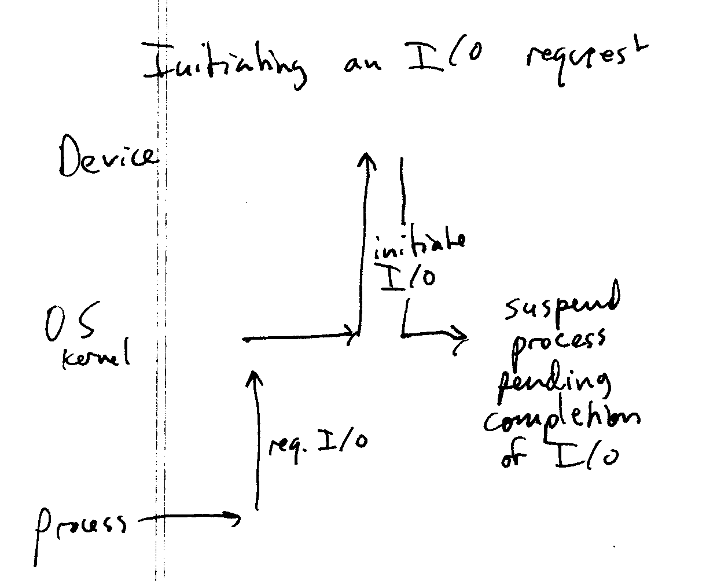
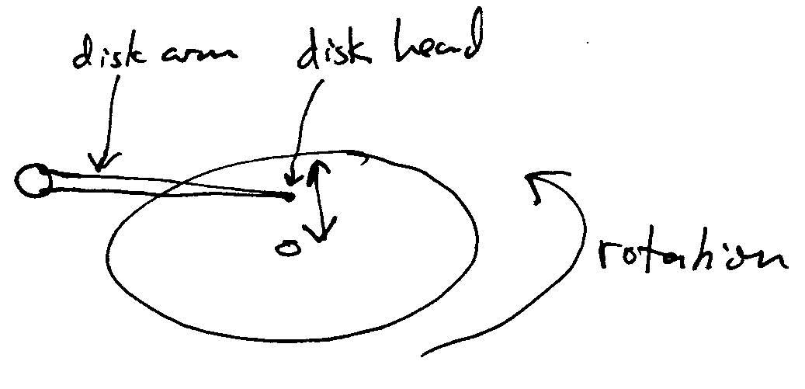
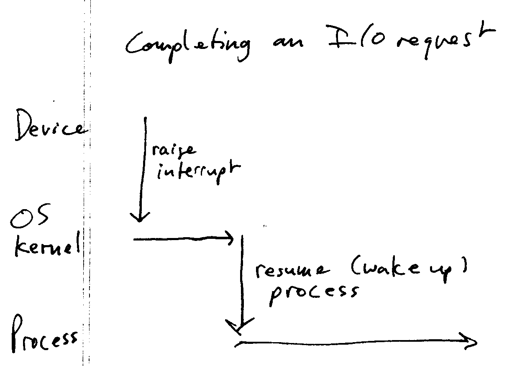
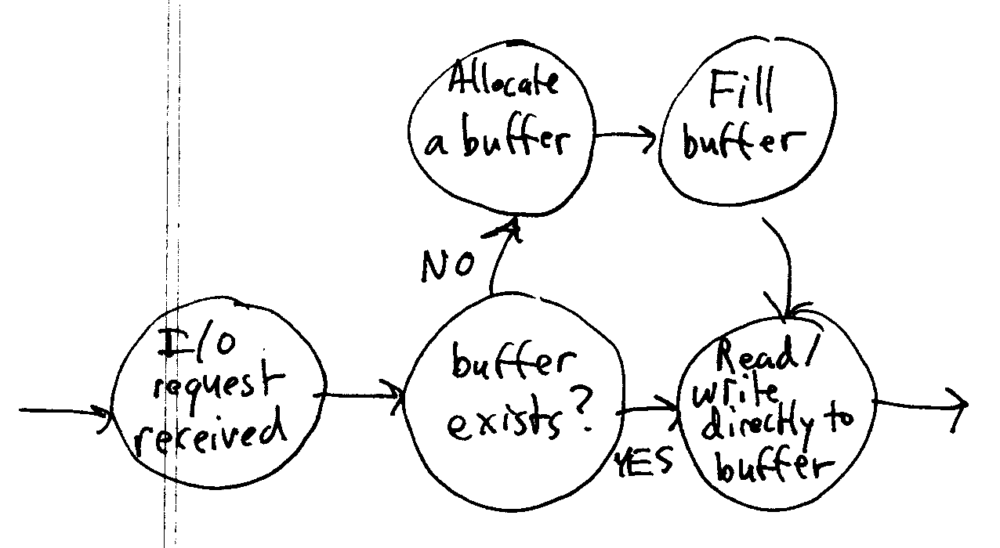

Announcement: Assignment 1 posted, due next Thurs by 11:59 PM.
Finish any parts of lecture 1.
An OS kernel is event-driven:
by itself, it does nothing. The OS only does work when an event
occurs:
General topic for today: Important functions the OS kernel must
support.
Continuation of discussion of interrupts and I/O. Talk about
programmed I/O vs. DMA. Discuss the concept of blocking.
General form of a process making a
request for I/O:

I/O requests can take a long time to
complete. E.g., typical hard drives spin at 7200 RPM:

.13
ms might be needed to rotate the disk so that the requested sector is
under the disk head. For a 3 GHz CPU, that is about 416,000 clock
cycles. The seek time (moving the disk arm laterally to access a
different cylinder) is even longer: typically 5-6 ms. That is
15,000,000 clock cycles!
Therefore, the kernel generally suspends the process while the I/O
request is pending. [Question: why?]
When the device has completed the I/O
operation, it issues an interrupt to the CPU, which triggers an
interrupt handler in the OS kernel:

The kernel resumes the process once the
I/O operation is complete and the data has been transferred to/from the
process's memory.
Suspending a process pending some future
event (such as the completion of I/O) is usually called blocking.
Suspending and resuming processes in
response to events is also called sleeping
and waking.
Processes. Terminology (contrast to program). Operations
for managing processes that the OS kernel must support.
Storage management. Filesystems.
One of the key functions an OS supports is managing data on mass
storage media such as hard disks and optical disks (CD, DVD).
At a low level, disk storage consists of a sequence of fixed-size sectors, or blocks. These are generally
addressed by their block number: block 0 is the first block on the
disk, etc. The number of bytes in a sector may vary by
device. Common values are 512 bytes (almost all hard disks) and
2048 disks (CD-ROM).
This organization is not very convenient for ordinary
programs. The OS generally supports one or more filesystems to organize the disk
blocks into higher level structures: directories and files. A
filesystem is an on-disk data structure. A filesystem driver in
the OS kernel is responsible for accessing and modifying the filesystem
data structures. Filesystem drivers also generally maintain data
structures in memory corresponding to files and directories currently
being used. [Question: why?]
Caching of filesystem data: as mentioned earlier, disks are very
slow compared to the CPU. If every access to data in a file
required disk access, disk-I/O-intensive programs would run very
slowly. For this reason, the OS caches data in files on disk in
memory. A cache is a collection of buffers, where each buffer is a
chunk of memory containing the current data of one or more consecutive
disk blocks. Therefore, file reads and writes are done using the
buffers, rather than directly to the disk blocks:

This explains why you can't simply turn a computer off; rather, you
need to explicitly tell the operating system to shut down.
[Question: why?]
An important concern in the implementation of a filesystem driver is
synchronization between processes. For example, two processes add
files to a directory at the same time. The OS kernel must
synchronize these requests so that the directory remains valid.
This general problem arises in all resources managed by the OS kernel
that may be accessed by multiple processes. This is the problem
of concurrency.
Memory management. Responsibilities and functions of the
OS. Hardware-supoprted (using MMU).
Memory management is the problem of allocating memory to processes.
Each process should have its own address space. This means
that, to each process, it appears to have its own private memory space.
Two processes should not use the same
physical memory at the same time unless they explicitly request to do
so. [Shared memory can be used as a form of inter-process
communication.]
When a process needs more memory, it must
request it from the OS kernel. If no physical memory is
available, then the OS kernel can "borrow" memory from other
processes. When a chunk of memory is borrowed in this manner, its
data must be saved. Usually, disk space is used to save portions
of a process's in-memory data that are not currently residing in
physical memory. This diskspace is generally referred to as the swapfile or pagefile. In this way, disk
space may be used to allow programs to use more memory than is
physically installed in the computer. This is known as virtual memory.
Protection and security.
There are many types of resources that are shared, such as disk
files and directories, hardware devices, etc. If an OS will
support multiple users, then there should be a way to ensure that only
authorized users may access particular resources.
E.g., you may want to protect certain files in your home directory
so that only you can access them.
This is the problem of protection.
The general way that protection is done is that each process is
associated with a user. Each shared resource is marked with extra
information specifying which users may access the resource, and what
kind of access is allowed. For example, user "Alice' might only
be able to read a particular file, while user "Bob" might be allowed to
both read and write the file.
Security the general problem of ensuring that protection mechanisms
are enforced, and unauthorized users do not access the system.